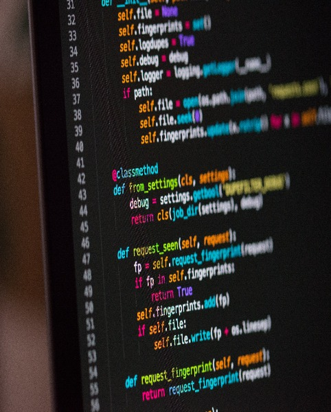
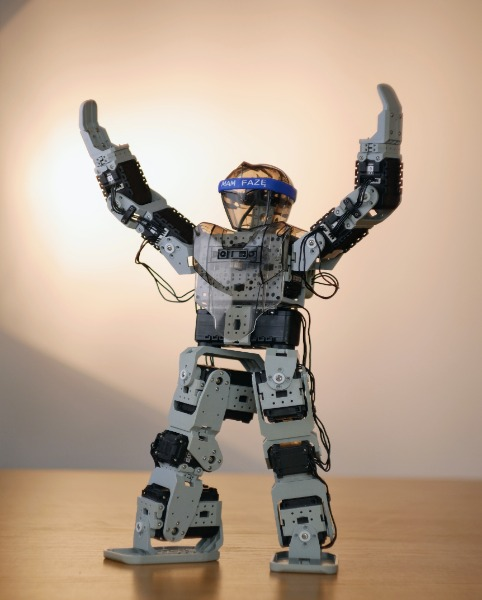

Just a Portfolio
ALL PROJECTS
Starting with Python
Crate python projects starting with how to intall python and start coding with visual studio. I even go over how to set up git hub so that you can have a place to store and share your own projects.
Power Supply

When working with small electonic projects a way to test them along the way is needed. This is a easy DIY powe supply that will be able to power you hobby projects and we will bilt so it can run off of lipo batteries.
LED Cube

Building a LED cube can be a great starting point for a hoby in electronics. We will go though the circuit design and the coding for the patterns. Having the LEDs wire and other elecronic parts will be needed so make sure you have everying before starting
Building a website

Building websites is encredibly fun and is as complicated as you want it to be. With this project I wll be designing and building this website you are curently on. A github account and computer with visual studio is needed for this project
Humanoid Robot
This a advanced robotics project using an arduilo and stepper moters. I would recomend going though the arduno projects before this project.
3D Printing

3D printing had become more afordable and a great way to be able to make custom projects. I will explain how to set up a printer and calabrate it so that you can get some good quality prints for your projects.
Minecraft server

Learning Linux and how to manage a server is a great thing to do and is easy enough using an older computer. This server can also be used for other thigs like website hosting.
Gameing PC

Building your own PC is a lot of fun and will help you learn better how a computer works. Parts for a computer are needed I will go over how to find parts with in a few price ranges.
Arduino Projects

Using an Arduino will elevate you ability to crate truly custom projects. I will be crating a robotic arm using stepper moters but atruinos have so many more uses.
RC Crawler

RC cars are a passon of mine and we wil be upgrading an RC crawler most of the things done to this car can be applied to other RC cars to make them drive like you want them to